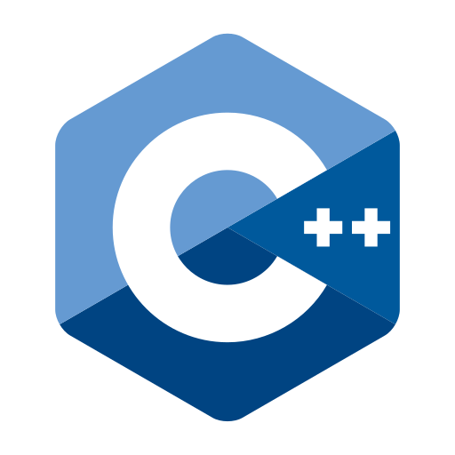
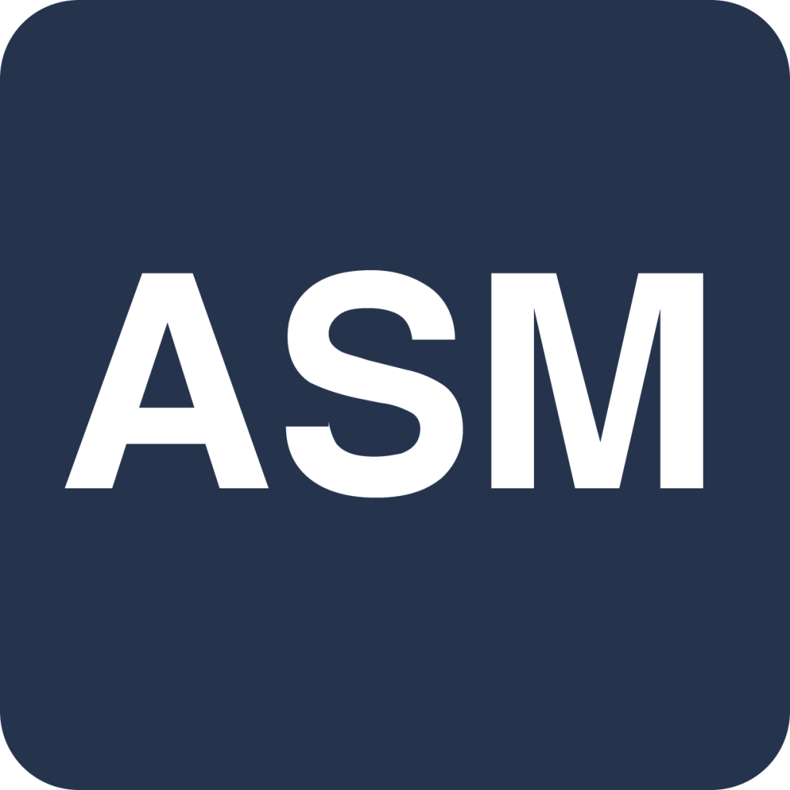
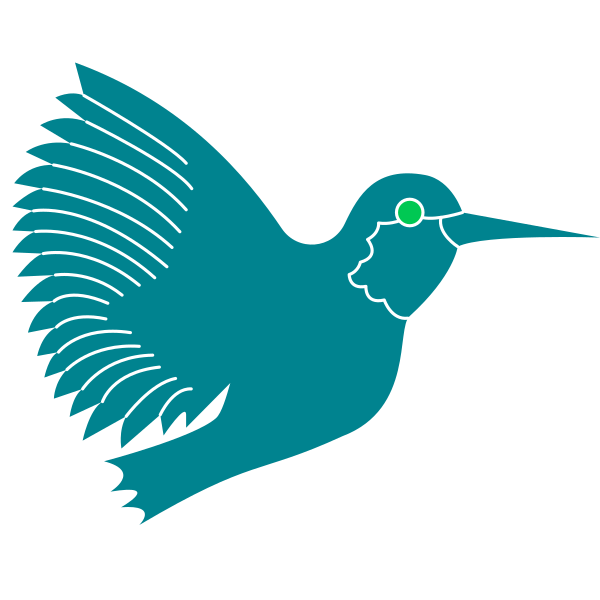
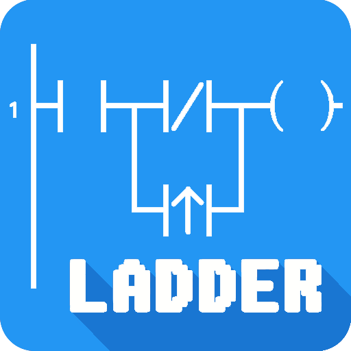
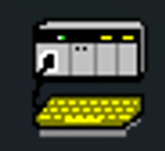
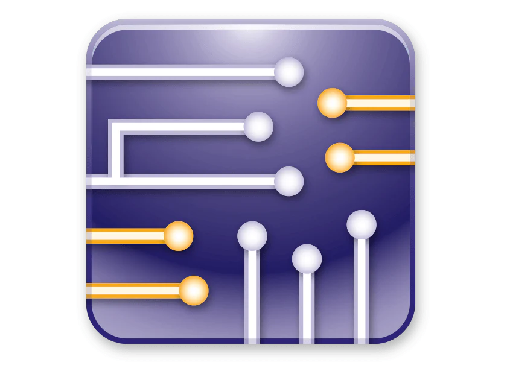
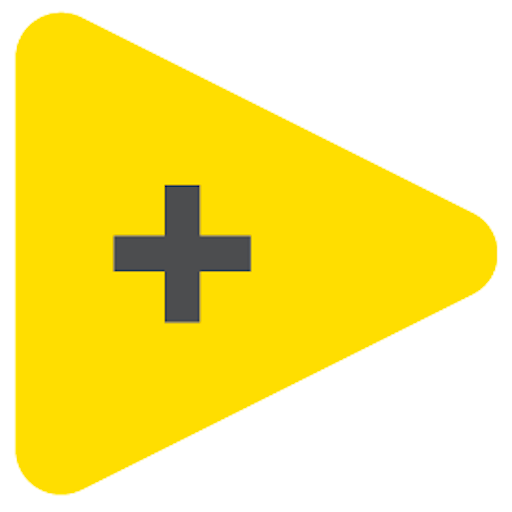
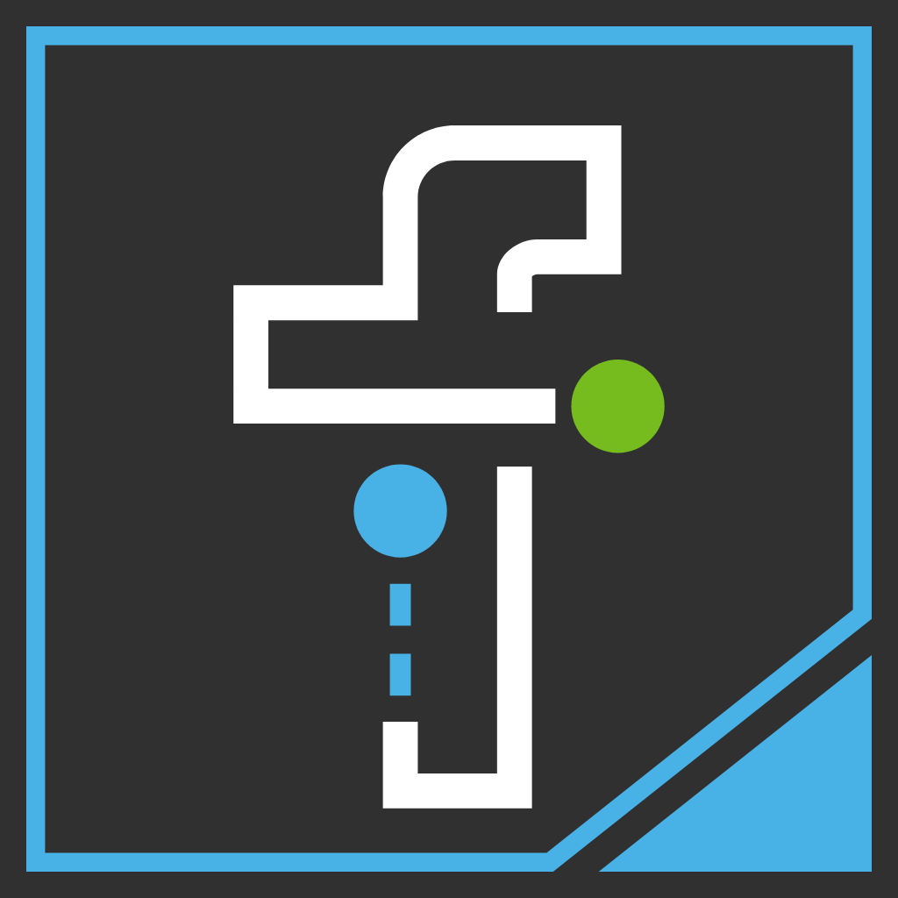

João Ferreira
Viseu, Portugal
Olá, tenho 23 anos, sou Engenheiro Eletrotécnico e de Computadores.
Mestre em Robótica, Controlo e Inteligência Artificial com subáreas de especialização em: Robótica e Sistemas Autónomos, Sistemas Ciberfísicos, Visão por Computador e Realidade Aumentada.
Dissertação de Mestrado: Sistema de deteção de desalinhamentos de garrafa para um sistema de pulverização de garrafas de um fabricante de vidro.
Formação Académica
- Licenciatura em Engenharia Eletrotécnica e de Computadores
Setembro 2019 – Julho 2022
- Mestrado em Engenharia Eletrotécnica e de Computadores – Robótica, Controlo e Inteligência Artificial
Especializações: Robótica e Sistemas Autónomos; Sistemas Ciberfísicos; Visão por Computador e Realidade Aumentada
Setembro 2022 – Julho 2024
Experiência Profissional
- Investigador Júnior – Universidade de Coimbra, Vidromecânica
Julho 2023 – Julho 2024
Desenvolvimento de um algoritmo de visão por computador para detetar garrafas e identificar desalinhamentos. A informação era processada e enviada para um PLC, integrando o sistema de automação de uma linha de produção. - Consultor Técnico – Vidromecânica
Setembro 2024 – Setembro 2025
Continuação e evolução do projeto anterior, com o objetivo de tornar o algoritmo adaptável a diferentes tipos de garrafas e condições de iluminação, garantindo um funcionamento contínuo 24h/dia. - Investigador – Immersive Systems and Sensory Stimulation Laboratory (IS3L), Instituto de Sistemas e Robótica (ISR)
Novembro 2024 – Novembro 2025
Participação no projeto GreenAuto, em colaboração com Stellantis, STREAK e F.Fonseca. Desenvolvimento de dois subprojetos:
- Programação de braço robótico para tarefas de aparafusamento e colocação de autocolantes com adaptação automática à posição das peças.
- Criação de algoritmo de visão por computador para deteção de marcas de água em pára-brisas e contagem/classificação por tipo (frente/traseira) de pára-brisas num suporte.
Competências Técnicas
Linguagens de Programação








Software e Ferramentas







